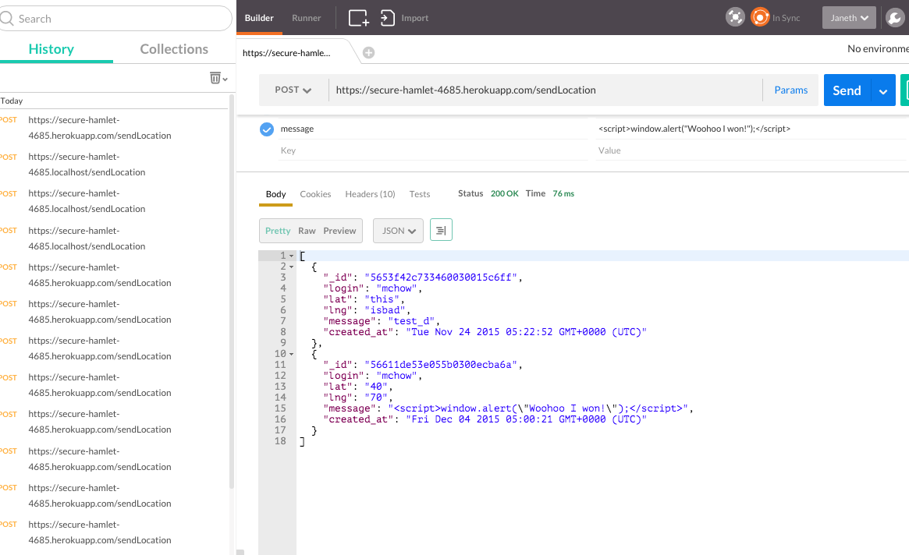
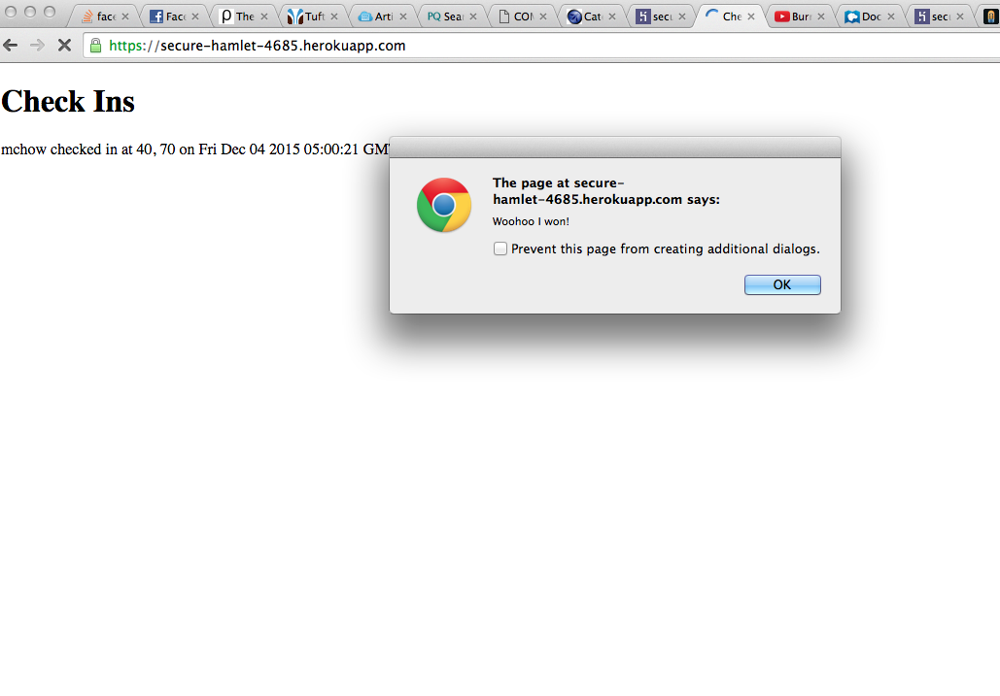
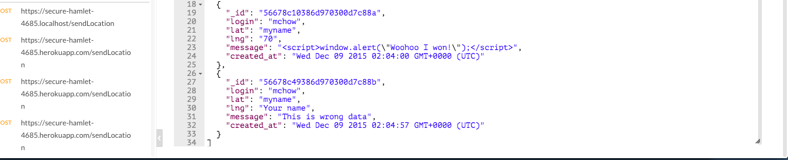

Security Assessment for secure-hamlet-4685
Prepared by: Janeth Jepkogei. 12/8/2015
Introduction
The goal of this assignment is to perform a security assessment on secure-hamlet-4685, a web application developed by John Carsey for Comp20 assignment 3. The web application takes and maintains location check-ins, i.e login, latitude, longitude, and a message, and provides an API that allows people to submit and retrieve the latest json data it received, or a list of all input data in the database. The application is however vulnarable to attacks and this document identifies the vulnerabilities then gives possible solutions to them.
Methodology
Initial testing was done using the "black box" method which represents what a real hacker would do. I ran the code on heroku web app and used Postman to send data to the server. I then looked at my partner's code just to find out if there were any other possible vulnerabilities that could be exploited.
Abstract of findings
The implementer of this application put so much trust in the user input
Issues Found
Cross-site scripting while injecting data:
Documentation:
This issue was found in the database as the database accepts all forms of data; app.post; POST API
Severity:
High. This is a huge problem and the most commonly used by hackers because it is easily neglected
Description of the issue:
Used Postman to post data into the database, the result was a success with status 200 meaning that the malicious data was successfully added to the database.
Proof of vulnarability:

Resolution/ Recommendation:
This problem can be fixed by validating the data received as input by HTML escaping. Never ever trust the user's input!
Cross-site scripting while accessing data from the database
Documentation:
This issue was found in the app.get("/ ") page; GET API
Severity:
High. This is a huge problem beacuse you do not want the users of your website to be receiving malicious data unrelated to what they are trying to access
Description of the issue:
Used Postman to post data into the database,then made a get request to the home page ("/") using Chrome.
Proof of vulnarability:

Resolution/ Recommendation:
This problem can be fixed by sanitizing the data, swap the ">" symbol to ">" and the "<" tags to "<". This ensure the data served is HTML encoded
Input copying without checking the type of input
Documentation:
This issue was found in while injecting data; POST API
Severity:
High. This is a huge problem beacuse a hacker easily serve data that could cause your application to behave strangely for example showing a picture of a person instead of a login name. In other cases, this could crush the server.
Description of the issue:
Used Postman to send data to the database and send strings in the latitude and longitude fields.
Proof of vulnarability:

Resolution/ Recommendation:
This problem can be fixed by checking to ensure the input is of the right type
Conclusion
Some of the future considerations to put in mind include not ever ever trusting the user's input. Always check or encode the input data before processing or storing it. Also take more precation before serving any requests to the server. Ensure that the data is clean and HTML encoded so as to prevent your client from.